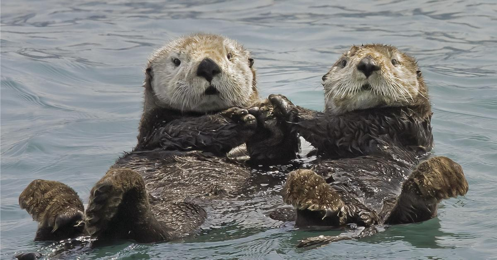

“Since the 19th century, close to 90 percent of the marshland that historically ringed San Francisco Bay has been lost to development.”
"Why the Otter?"
Otters used to be a prevalent and important species native to the San Francisco Bay area in the 1700s, but due to the development of the city and with the influx of more and more consumers moving to the city, the otter population in San Francisco has been utterly wiped out. A deadly combination of overhunting for their furs, combined with a disregard for the diverse natural habitat of the Bay area has combined to create a situation that is still difficult to reverse. While the species is now protected under the Endangered Species Act, otters are still struggling to restore their population in California, with an estimated population of only 3000.


"Why are otters so important?"
Otters are actually what is known as a keystone species. They are considered apex predators of the marine nearshore environment, and play an incredibly crucial role in maintaining the balance in these ecosystems. By preying on other invasive species such as sea urchins, they are able to keep other important species like kelp beds safe from harm. When these types of keystone species are hunted and removed from environments, it allows for harmful invasive species to take over. This is an issue we know all too well in San Francisco, as sea urchins have destroyed nearly all of California kelp forests which are essential for healthy marine habitats.


"What else have we lost?"
The more we destroy the natural habitat around San Francisco, the more biodiversity we lose. In addition to otters, other wild animals such as the Western Snowy Plover, San Francisco Garter Snake, and Mission Blue Butterfly have all been added to the endangered and threatened species list, with only small populations still existing in parts of the Bay area. In fact, there are currently over 35 species at risk in the Golden Gate National Parks alone. That's more federally protected species than any other national park unit in the entire United States, more than Yosemite, Yellowstone, Sequoia, and Kings Canyon combined!